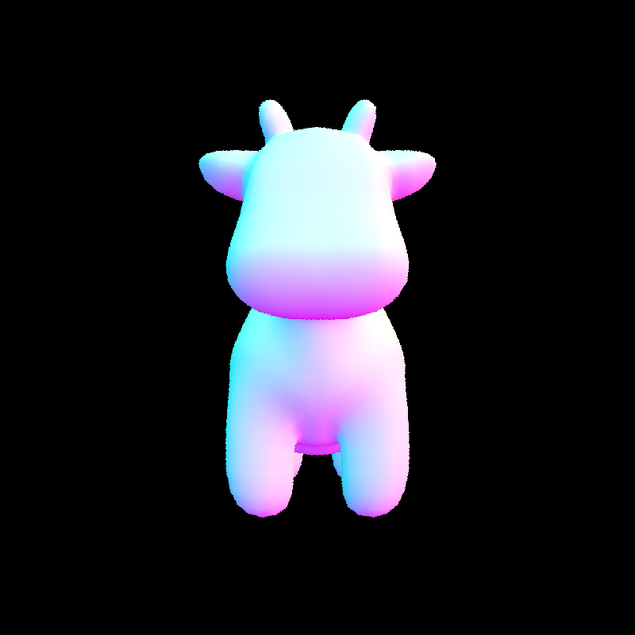

Project 3-1: Path Tracer
CS 184: Computer Graphics and Imaging, Spring 2023
Overview
For this project, we implemented components of a physically-based, pathtracing renderer. This begins with ray generation and the handling of intersections for geometric primtives, including triangles and spheres. For the former, we implemented the efficient Möller-Trumbore algorithm. Then to improve the efficiency of detecting intersections, we implemented a bounding volume heirarchy (BVH), partitioning the primitives based off a heuristic which we demonstrate provides signficant performance improvements. From here, we improve the realism of the images by implementing sophisticated physically-based lighting, including direct lighting and indirect lighting. Lastly, we implement adaptive sampling, which serves to improve performance when colors quickly converge, and increase realism when they do not. Overall, we found the project satisfying. We were amazed at the quality and realism of the images given the relatively simple code (though often became frustrated with the long rendering times).
Part 1: Ray Generation and Scene Intersection (20 Points)
Ray Generation, Primitive Intersection Pipeline
At a high level, we must first have a mechanism for determining which color to assign to each pixel. This is determined by the method PathTracer::raytrace_pixel, which takes a pixel coordinate. It is called for each pixel coordinate. For each each, we take the following steps.
- We take a number of samples around this pixel. These samples are taken in the unit square that originates at the pixels coordinates. That is, for pixel coordinates \((x, y)\), the square’s upper-right corner is given by \((x + 1, y + 1)\). In other words, we will take samples \((x + o_1, y + o_2)\) where \(o_1\) and \(o_2\) are offsets such that \(0 \leq o_1, o_2 \leq 1\). We use the member variable
gridSampler’s methodget_sample()to obtain \((o_1, o_2)\). - For each \((o_1, o_2)\), we get \((x + o_1, y + o_2)\) and normalize this value by dividing by the screen dimensions. After this, the coordinates are in image space.
- These image space coordinates are then passed to
Camera::generate_ray, using thecameramember variable. This produces the ray from the camera to the given sample coordinate. This is done by transforming the normalized image coordinates to camera space coordinates, then into world space coordinates. Finally, the ray’s direction is normalized (as is required by the implementation). - We then call the function
est_radiance_global_illumination, passing the obtained ray, to obtain the color for this particular sample. - This is done \(n\) times where \(n\) is the number of samples to be taken per pixel (which can be modified by the user of the program).
But how do we color the objects in our scene? First, in order to treat all object uniformly, we provide a base class, Primitive from which all scene objects derive. For this project, we fully support spheres (Sphere) and triangles (Triangle). The Primitive class defines virtual methods has_intersection and intersect, which we define for Sphere and Triangle. Then, utilizing polymorphism, we store a list holding objects of type Primitive*, which we iterate through, checking for intersections with our rays, and drawing the primitive if an intersection is found. This process is further expanded in later sections.
Triangle Intersection: Möller-Trumbore
As mentioned, we implemented the intersection methods for both Sphere and Triangle. As the former’s implementation is relatively straightforward and typical, we will only describe the latter. To test for a ray’s intersection with a Triangle, we implemented the Möller-Trumbore algorithm. We provide a high level description of this algorithm.
The algorithm first checks if the ray is parallel to the plane on which the triangle lies. This is the only case in which an intersection between the ray and plane is impossible. This is done by first taking the cross product of the ray’s dimension vector and one of the edges of the triangle, then taking the dot product of this value and another of the triangle’s edges, and finally checking if this value is zero. Note that due to floating point inaccuracies, we don’t check against zero directly, but check if the value is close enought to zero (i.e., it is less than \(\epsilon\) and greater than \(-\epsilon\) where \(\epsilon\) is a constant defined to be sufficiently close to zero).
From here, the algorithm solves a system of equations involving two of the barycentric coordinates of the triangle and scalar \(t\), where \(t\) defines the intersection point \(O + td\) (\(O\) being the origin of the ray and \(d\) being the direction vector). This is done via Cramer’s rule. We denote the two barycentric coordinates obtained as \(u\) and \(v\). Only if these values are non-negative and at most 1 when summed does the ray intersect the triangle. With this verified and \(t\) obtained, the Möller-Trumbore algorithm is complete. But we provide an additional check, ensuring \(t\) is in the allowed range for the ray (i.e., we check t >= ray.min_t && t <= ray.max_t).
Showcase

Part 2: Bounding Volume Hierarchy (20 Points)
BVH Construction Algorithm
We first sort all primitives according to the y-value of their bounding box’s centroid, i.e., for a primitive p of type Primitive* we sort according to p->get_bbox().centroid().y. This was done once, prior to constructing the BVH. We then construct the BVH using this sorted array of primitives as follows.
Given a range within the list (i.e., a pair of iterators start and end), we first compute the bounding box of the primitives, from which we construct a BVHNode. If the number of primitives does not exceed the maximum leaf size (max_leaf_size), we mark the node as a leaf. Otherwise, the question becomes, how do we determine which iterator ranges to assign to the left and right children? To answer this, we take advantage of the fact that the primitives are sorted. First, we obtain the average of the primitive’s y-values (p->get_bbox().centroid().y)1. Then we do a binary search to obtain the first primitive in the range whose y-value is not less than the average. We call this the split point (split) and set the left child’s range as [start, split) and right child’s range as [split, end). If for whatever reason split is at either end of the range, we evenly divide the range in half, assigning one half to each child.
Performance Improvements
To test performance improvement after constructing the BVH via the algorithm described above, we tested rendering times on five scenes with primitives counts ranging from 40,081 to 196,608. We observe massive improvements, ranging from 66x to 2553x. The exact improvements observed are found in the table and graph below. It is of note that the most drastic improvements occur when the scene object is vertically oriented, i.e., when it is much taller than is it wide. We see that beast.dae and CBlucy.dae, both very tall figures, have the most drastic improvements, with the latter being an outlier. The only explanation we could think of is that the model is very favorable to our heuristic.
| File | Primitive Count | Naive (s) | Our algorithm (s) |
|---|---|---|---|
peter.dae |
40,018 | 79.0118 | 1.1783 |
maxplank.dae |
50,081 | 87.7623 | 0.8615 |
beast.dae |
64,618 | 161.4620 | 0.4 |
CBlucy.dae |
133,796 | 221.7524 | 0.0868 |
blob.dae |
196,608 | 337.8134 | 7.4264 |
Showcase
peter.dae, 40,018 primitivesmaxplanck.dae, 50,801 primitivesbeast.dae, 64,618 primitivesCBlucy.dae, 133,796 primitivesblob.dae, 196,608 primitivesPart 3: Direct Illumination (20 Points)
In this part, we are adding direct light estimation to our rendering. We have two implementations for the direct lighting function.
Uniform hemisphere sampling
We implemented estimate_direct_lighting_hemisphere(), which estimates the lighting from this intersection coming directly from a light beam by sampling uniformly in a hemisphere.
We have a for loop where we iterate over num_samples times, in each iteration:
We sample a random
wiin the hemisphere(object space) usinghemisphereSampler.We convert
witowi_w(world space) using the matrixo2w.We generate a new ray that starts at
hit_pand extends in the direction ofwi_w. Additionally, we offset the origin bywi_w * EPS_Ffor numeral precision issues.If the ray intersects anything, we add the product of reflected emission along the ray, the current surface intersection’s bsdf function,
cosine(wi), and1/2π(pdf of uniform hemisphere sampling) toL_outaccording to the formula below covered in the lecture.
In the end, we divided L_out by num_samples.
CBspheres_lambertian.dae rendering with uniform hemisphere sampling:
Importance sampling
We implemented estimate_direct_lighting_importance(), which estimates the lighting from this intersection coming directly from a light beam using importance sampling. We have a for loop where we iterate over every light beam in scene->lights, in each iteration:
If the light is a point source, we only sample once. Otherwise, we sample
int(ns_area_light)times.We use
SceneLight::sample_L()to sample the light beam, which takes a hit point, returns the incoming radiance, and writes towi(the sampled direction between p and the light source),distToLight(the distance between p and the light source in the wi direction), andpdf(the value of the probability density function evaluated at the wi direction).We convert
witowi_o(object space) using matrixw2o.If
wi_o.z < 0, we continue since the light is behind the surface at the hit point We generate a new ray that startshit_pand extends in the direction ofwi. We set themax_tof the ray to bedistToLight - EPS_F(numeral precision issues). Additionally, we offset the origin bywi_w * EPS_Ffor numeral precision issues.If the ray doesn’t intersect with anything, meaning there are no obstacles on its way to the light, we add the product of the incoming radiance calculated by
SceneLight::sample_L(), the current surface intersection’s bsdf function,cosine(wi_o), and1/pdfto L_out according to the formula mentioned above for uniform hemisphere sampling.
If the light is not a point source, we divided the accumulation of lights by int(ns_area_light), and add it to L_out.
Since the logic for when the light is a point source or not is very similar, we have a helper function that extracts most of the logic to make our code cleaner.
Finally, we updated PathTracer::est_radiance_global_illumination() to return (zero_bounce_radiance(r, isect) + one_bounce_radiance(r, isect)) to test our implementations.
CBspheres_lambertian.dae rendering with importance sampling:
dragon.dae rendering with importance sampling:

Below we compare the noise levels with diffrent number of light rays with 1 sample per pixel.
CBbunny.dae rendering with:
We observe that the variance decreases linearly with the increase in the number of light rays we are using.
Below we compare the two implementations for the direct lighting function: Uniform hemisphere sampling & Importance sampling.
CBbunny.dae with 16 samples per pixel and 8 samples per light:
CBbunny.dae with 32 samples per pixel and 16 samples per light:
CBbunny.dae with 64 samples per pixel and 32 samples per light:

We observe that importance sampling converges much faster and takes a shorter time to compute. Images rendered using uniform hemisphere sampling are noisier because a large proportion of the sample rays we generated won’t intersect with the light source directly. But for importance sampling, we only sample rays from the light source, which makes the rendering process more efficient and generates better rendering results.
Part 4: Global Illumination (20 Points)
Now we want to implement global illumination, which includes both direct and indirect lighting. This will make our rendering results more realistic because we will consider lights bouncing multiple times off different surfaces, and light up areas not directly illuminated by lights.
We implemented PathTracer::at_least_one_bounce_radiance(), which returns the one bounce radiance + radiance from extra bounces at this point. We recursively call PathTracer::at_least_one_bounce_radiance() to simulate extra bounces, and we terminate randomly based on Russian Roulette to avoid infinite recursion.
We first need to make a change to PathTracer::raytrace_pixel() where we initialize the camera rays’ depths as max_ray_depth, which we will use later in our recursion process.
Specially, we first initialize our
L_outto beone_bounce_radiance()and set our Russian Roulette continuation probability to be0.65.We terminate if the
max_ray_depth <= 1, meaning we terminate when we only want direct illumination.We also terminate if Russian Roulette tells us to stop
If none of the termination conditions are met, we used the current surface intersection’s
sample_f(), which takes in aw_outand sample awiand its corresponding pdf valuer, and returns the evaluation of the BSDF at(w_out, *wi).We converted
w_intow_in_world(world space) using the matrixo2w.We generate a new ray that starts at
hit_pand extends in the direction ofw_in_worldwith depth set tor.depth - 1. Additionally, we offset the origin byw_in_world * EPS_Ffor numeral precision issues.If the new ray intersects the bvh, we recursively call
PathTracer::at_least_one_bounce_radiance()on the new ray. And add the product of the result of the recursion call, the radiance returned bysample_f()calculated above,cosine(w_in),1/pdf, and1/continue_prob.
Below are some renderings results with 1024 samples per pixel, 4 samples per light and 4 light rays using global illumination.
Below is the comparison of CBspheres_lambertian.dae with only direct illumination and with only indirect illumination with 1024 samples per pixel, 4 samples per light and 4 light rays.

For CBbunny.dae, compare rendered views with max_ray_depth set to 0, 1, 2, 3, and 100 (the -m flag). Use 1024 samples per pixel.
Below we demonstrate the rendering results of CBbunny.dae with max_ray_depth with 1024 samples per pixel, 4 samples per light, different max_ray_depth.
Pick one scene and compare rendered views with various sample-per-pixel rates, including at least 1, 2, 4, 8, 16, 64, and 1024. Use 4 light rays.
Below we compare the rendering of CBspheres_lambertian.dae with different samples per pixel, 4 samples per light and 4 light rays.
Part 5: Adaptive Sampling (20 Points)
Now we want to implement adaptive sampling, which helps reduce computations for pixels that converge relatively faster compared to other pixels. So instead of using a fixed, usually high, number of samples per pixel, we will stop the sampling process when the pixel already converged, meaning we will concentrate the samples in more challenging parts of the images.
As for our implementation, in each iteration of the for loop of length ns_aa, we compute the cumulative s1 and s2, which are used to calculate the mean and the standard deviation for the computation of I based on the formula below. in raytrace_pixel(), for every samplesPerBatch number of samples, we check if the pixels have converged yet. We implemented a has_converged helper function that helps check if a pixel has converged yet based on the formula below, if I ≤ maxTolerance⋅μ, we will stop the sampling process. Otherwise, we keep sampling until the iteration reaches ns_aa, which is the fixed amount of samples we set.
Below we have the rendering result of CBbunny.dae and its corresponding sample rate image with 2048 samples per pixel, 1 sample per light and max_ray_depth = 5.
Below we have the rendering result of CBspheres_lambertian.dae and its corresponding sample rate image with 2048 samples per pixel, 1 sample per light and max_ray_depth = 5.

Note on Collaboration
We collaborated through pair programming over Zoom, though had difficulties as Zoom on Ubuntu (which one of us uses) is unstable and will occasionally crash the graphics driver when screen sharing. We each led a few tasks, which we tried to divide evenly, divided based on our interests. This often meant one person would work on a section partially independently, consulting the other when assistance was needed. Overall, it was a smooth process. The main difficulty was arranging which computers to run the renders on (as they were extremely slow in some cases). We each became more familiar with our work preferences and communication styles.
Footnotes
Constructing the BVH took very little time, but if we wanted to further optimize this process, we could construct a prefix sum array for the primitive’s y-values. This would allow us to compute the average for a range in constant time instead of linear time.↩︎